Minamiise, Mie: things to do, food and stays
Minamiise · Mie
Minamiise
Highlighted on the Mie map.

Stay
はなれ月灯

Hanare Gatsu Tomoshibi
Inn in Minamiise with a sauna.
南伊勢 咲いた荘
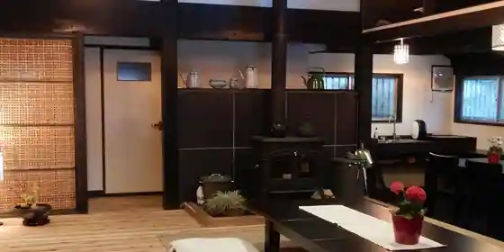
Minamise Sai Ta So
Inn in Saida, Minamiise with a renovated traditional house.
YYLAND RETRO
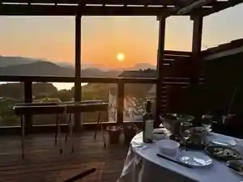
YYLAND RETRO
Inn in Kitani, Minamiise with scenic views.
Retreat Hotel ENTO ISESHIMA
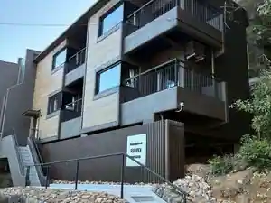
Retreat Hotel ENTO ISESHIMA
ｙｙｌａｎｄ
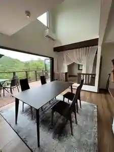
yyland
Inn in Kitani, Minamiise with pet-friendly rooms.
心癒される宿 ニューはまぐち屋旅館
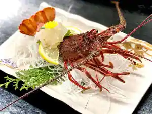
Kokoro Iyasa Reru Yado Nyu Hamaguchi Ya Ryokan
1 and Only Hotel IO
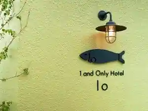
1 and Only Hotel IO
ネットワークリゾートなんせい
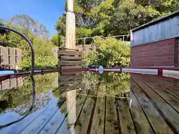
Nettowaku Resort Nansei
寿し友旅館
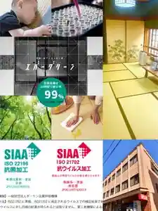
Hisashi Shi Tomo Ryokan
Ryokan inn in Kowaura, Minamiise with local seafood dinners.
かわちや旅館
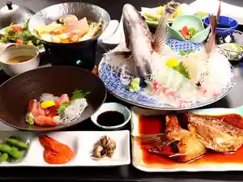
Kawachiya Ryokan
Dining
丸魚食堂

Maru Sakana Shokudo
伊勢志摩まぐろ食堂
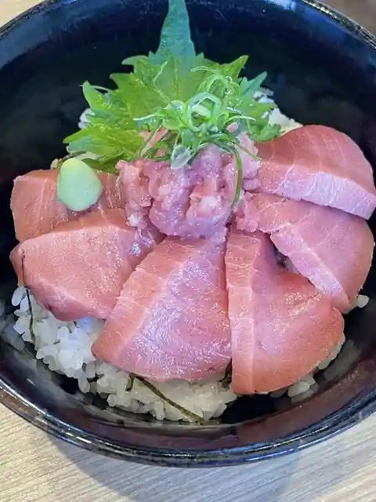
Iseshima Maguro Shokudo
FIVE
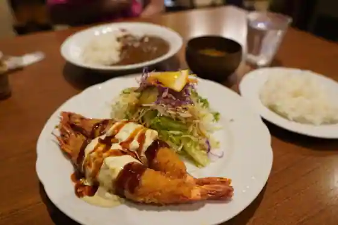
FIVE
玉山食堂
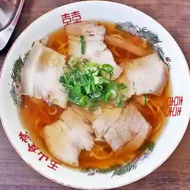
Tamayama Shokudo
やんがや
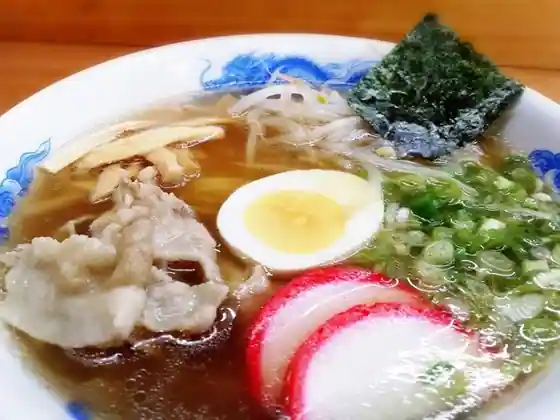
Yangaya
来来憲
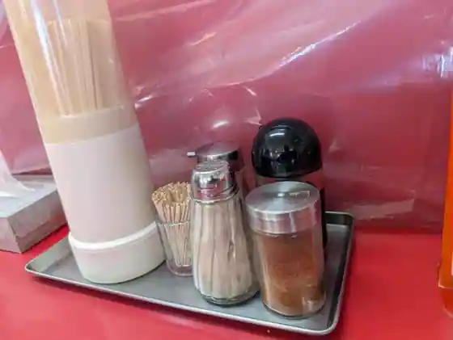
Rairai Nori
秀榮
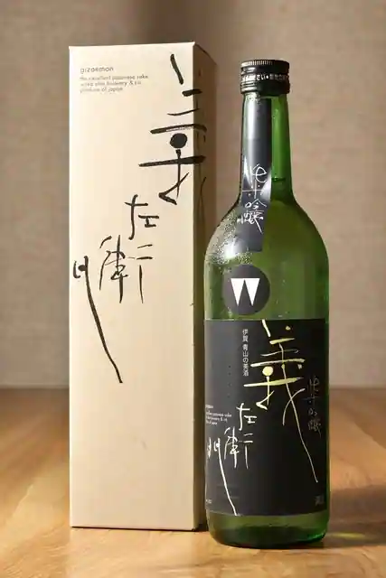
Yoshie
たまり場
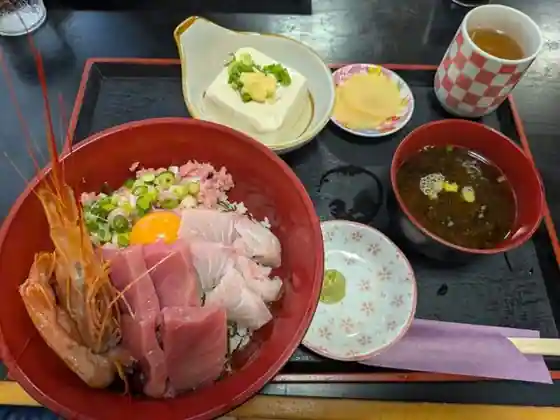
Tamari Ba
マルショウ
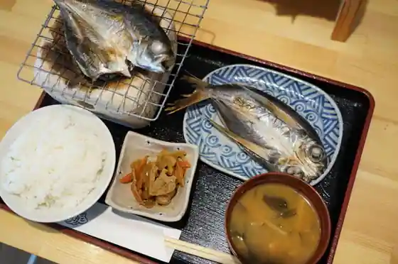
Marushou
ありすえ
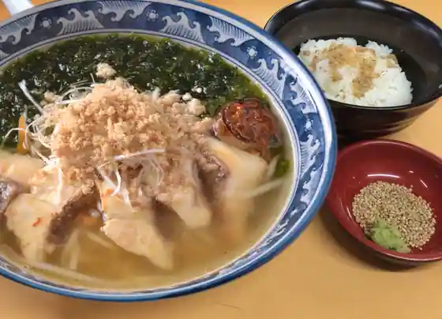
Arisue
ひがしやま
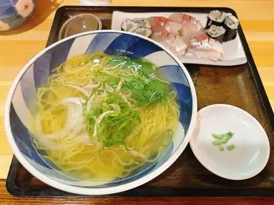
Higashiyama
マサヤ
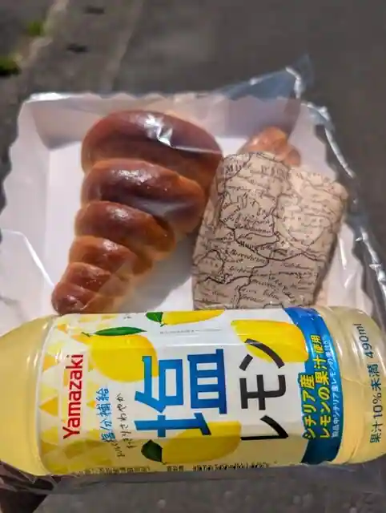
Masaya
グリーン＆グリーン
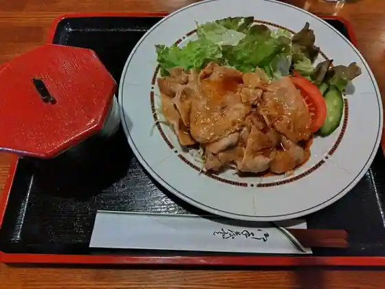
Gurin & Gurin
たいやき マルショウ
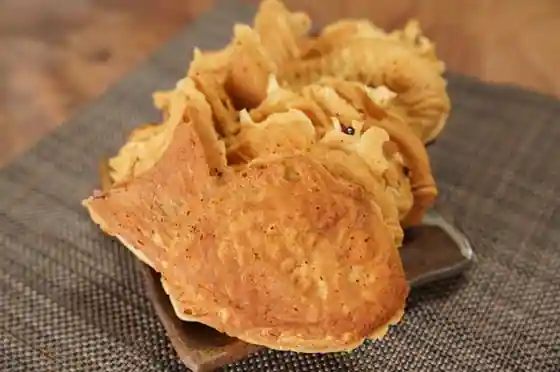
Taiyaki Marushou
牛清
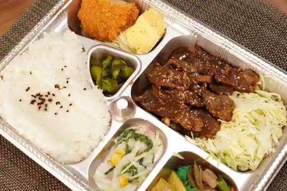
Ushi Kiyoshi
とうじやcoffee
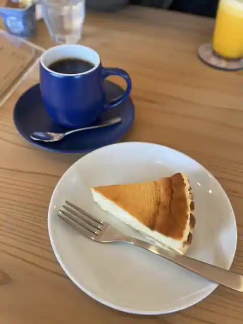
Tojiya coffee
スパイス食堂 マルコ
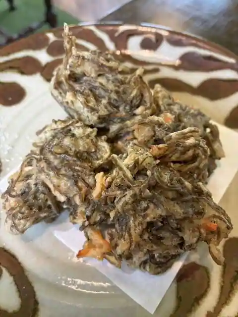
Supaisu Shokudo Maruko
いっぷく亭
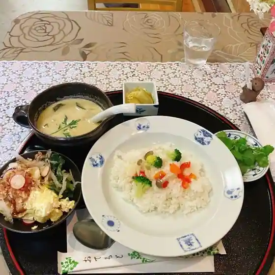
Ippuku Tei
ヒロヤ
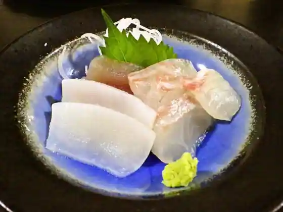
Hiroya
とよや勘兵衛
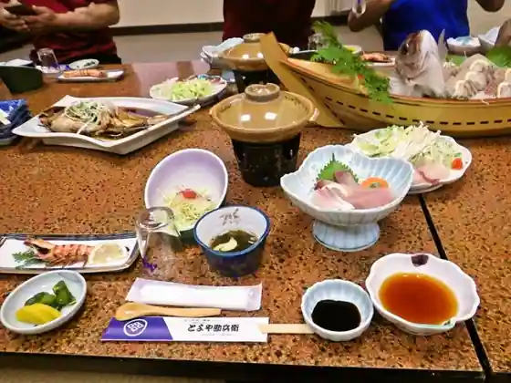
Toyoya Kanbe
ひもの 三五七や
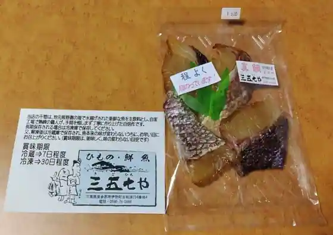
Himono San Go Shichi Ya
民宿満玉
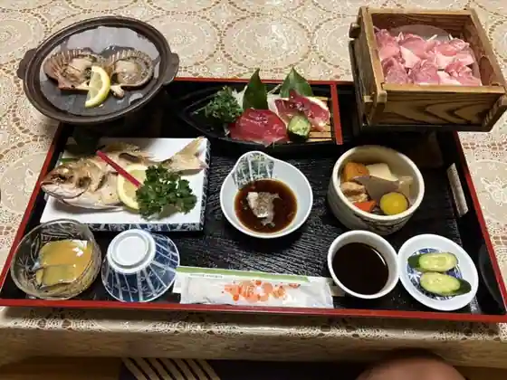
Minshuku Man Tama
ETELÄ
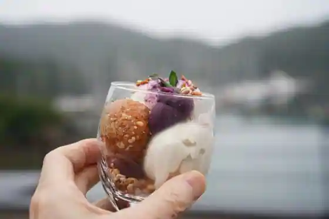
ETEL A
Sights
Gogatokoro Ura Asamayama

Aso Ura Oyako Bridge

Onigashiro (Minamiise)
Ta So Shirahama

Kawauchi no Oicho (Wakakusa Sono)

Sei Izumi Tera (Fujidana)
Aisu Village
Minamiise Cherry Blossoms (Michikata)
Minamiise Cherry Blossoms (Kawauchi Kawa)
Minamiise Cherry Blossoms (Ogata Kamado)
O Fuchi Shirataki
Tachibana Lookout no Tenku Buranko (U Kura Enchi)
Kawa Village Zuiken Park
Kappa Hashi (Iseji Hashi) no Ajisai
Nankai Tembo Park (Nankai Lookout)
Kawa Village Zuiken Park no Kawazu Sakura
Kyu Ho Hara Shogakko no Oicho
Nirahama Lookout
Naka no Iso Lookout
Setsu Hara Shirataki
Murayama Fudo Falls (Asahi Taki)
Izumi no Gyoi Kizakura
Kawauchi Fudo Falls
Shin Kuwa Kamado Fudo Falls
Ise Michi Shinchi Tani Nanatsu Taki
Togu Fudo Falls
Kowa Ura Fudo Falls
Fu Shima Park Nanto
Yahashira Shrine (Kowa Ura)
Aisu no Kan
Hamabo Gunsei Chi (Minamiise Nai Se)
Ken Ejima Lookout (U Kura Enchi)
Tachibana Lookout (U Kura Enchi)
Kasaragi Lookout (U Kura Enchi)
Kamado Ho no Shio Seien Tokoro
U Kura Enchi (Akebo no Lookout Ken Ejima Lookout Kasaragi Lookout Tachibana Lookout)
Na Ya Ura Guraundo no Kawazu Sakura
Akebo no Lookout (U Kura Enchi)
U Kura Enchi (Hato no Irie)
Ise Gendai Art Museum
Marukinmaru
Fu Shima Park Nanto
(Kabu) Tsuchi Miki Farm
TASO SUNRISE VILLAGE
Nanto Park
Basan
Taichi In
Nagoyaka Furawa Garden (Ita Fuchi Farm)
Togu Shiryo Hozon Kan
Nankai Tembo Plaza no Zekkei Buranko
Hachi Negi Yama
Kyo Michi Yama
Kokudo 260 Gosen Cherry Blossoms
Tanahashi Kamado Fudo Falls
Kokudo 260 Go no Keikan
Tsurugi Toge
Yamatohime Inochi Koshikake Iwa
Nomi Saka no Chiso Shukyoku
Gogatokoro Joshi
Dai Hachi Umi Harumaru
Tsuri Park Sasuke Ya
Sakaguchi Maru
Kuro Chan Tosen
Kubo Tosen
Umi Sakuramaru
Ten Yoshiya
Saniikosutokayakkusu
Tsuru Workshop
Koei Maru
Tsuribune Nagisa Maru
HDA Ho Za Ura Daibinguashisuto
Onigashiro (Minamiise)
TASO FOREST CAMP
Ta So Shirahama Beach
Gogatokoro Wan Botosabisu
Shishi Shima no Juso
Kowa Ura Mirai Club
Hotaru Momiji En